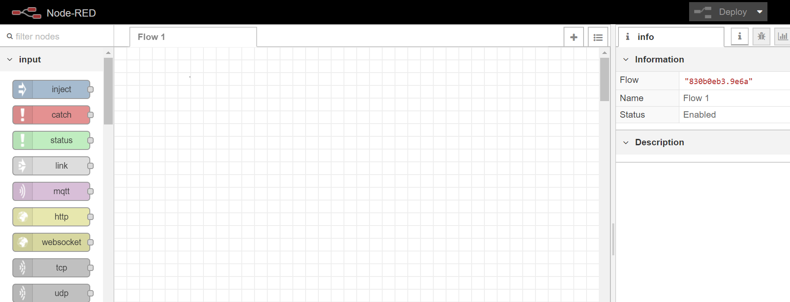
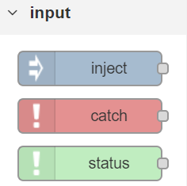
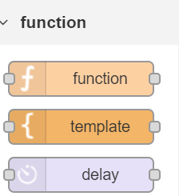
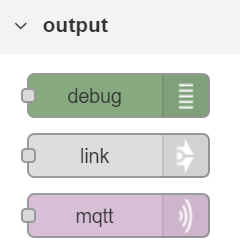
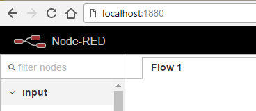

Workshop - NodeRed
"Integrações rápidas para IoT."
Palestrante: Rogério Fontes / @rogeriofontes
Sobre o palestrante:
APAIXONADO EM MANEIRAS E FORMAS ÁGEIS DE CRIAR CÓDIGO FONTE. PROGRAMANDO SEMPRE TOMANDO UM BOM CAFÉ E ESCUTANDO UM BELO E PESADO ROCK`N ROLL. TRABALHA A MAIS DE 10 ANOS COM JAVA E LINUX, PASSANDO POR ANDROID, PYTHON, PHP E AGORA COM O CORAÇÃO NO ANGULAR.JS E NODE.JS. PROFESSOR UNIVERSITÁRIO DE REDES DE COMPUTADORES, JAVA E DISPOSITIVOS MÓVEIS. JUGLEADER E CO-FUNDADOR DO UAIJUG (GRUPO DE USUÁRIOS DO TRIÂNGULO MINEIRO) E DO TRIÂNGULO HACKERSPACE. ESPECIALISTA DE SISTEMAS NO SOCIALBANK E APAIXONADO POR ESTUDOS MÚSICAIS.


Vamos falar sobre IoT?

E as Integrações?
O IoT depende de um conjunto de tecnologias como RFID, IPv6, Big Data e APIs. Web APIs, ou mais fortemente as REST API, são a chave para a conexão de dispositivos com a Internet. Por isso a importância delas.
O que podemos fazer com NODE-RED?
- Publicar tweets automáticos;
- Chatbots;
- Home automation;
- Monitorização de dados sendo IoT ou Não;
- RestAPI's
- Dashboard
- Redes sociais / mensageiros: Twitter, Facebook, Slack, Telegram
- Integração com outros serviços: IBM Watson, Openwhisk
- Banco de dados: MySQL, CouchDB, MongoDB, Azure SQL
Vamos falar de Node-RED?
O Node-RED é uma ferramenta de programação visual que conecta dispositivos de hardware, APIs e serviços online de maneiras simples. Ele fornece um navegador, que é basicamente um editor, que facilita a criação e conexão de fluxos. Ele usa vários nós na paleta, que podem ser arrastados e com único click e com isso podemos customiza-los. Os nós na paleta que pode ser implementado em tempo de execução em um único clique.
https://nodered.org/
Node-RED?
O Node-RED, foi criado pela IBM Emerging Technology, e é uma ferramenta de desenvolvimento Open-Source, baseada em fluxos. Ela foi desenvolvida para interagir com dispositivos de hardware, APIs e vários tipos de serviços e Integrações online e offline, visando facilitar projetos de IoT (Internet of Things).
histórico
- Criado e 2013 pela IBM com a função de conectar dispositivos e hardware de maneira simples a serviços web e outros softwares.
- É opensource com uma comunidade muito ativa - https://github.com/node-red/node-red.
- Transformou-se em uma ferramenta de programação IoT para os mais variados propósitos.
Como funciona?
O Node-RED permite a programação através de uma interface gráfica bastante simples e intuitiva. Para desenvolver uma aplicação com Node-RED, apenas é necessário ligar nós em outros nós, e programar ou configurar suas próprias funções. Para funções mais eleboradas podemos criar código JavaScript.
Qual a vantagem?
O Node-RED tem um tempo de execução leve, que é construido em Node.js. Isso aproveita o máximo do modelo orientado a eventos (event-driven) e modelo não bloqueante (non-blocking model). Ideal para hardwares de baixo custo.
Qual a vantagem?
- Simplifica o desenvolvimento integrando blocos de código para executar tarefas.
- Faz uso de uma abordagem de programação visual que permite conectar "nós", para executar uma tarefa específica.
- Podemos criar fluxos, conectando nós de entradas, saídas e "negócio".
Tem uma documentação excelente!
- Tutoriais: https://cookbook.nodered.org.
- Guia de usuário: https://nodered.org/docs/user-guide.
- Tutorial para criação de nós: https://nodered.org/docs/creating-nodes.
- Documentação da API: https://nodered.org/docs/api.
- Tutorial para desenvolvedores colaboradores: https://nodered.org/docs/developing
- Muitos exemplos de fluxos prontos: https://flows.nodered.org/?type=flow
- Muitos nós disponíveis: ttps://flows.nodered.org/?sort=downloads&type=node
Conceitos do Node-RED
O que são Fluxos?
- No Node-RED, programas são fluxos compostos por uma coleção de nós conectados para trocar mensagens.
- Cada nó tem um propósito bem definido.
- Tecnicamente, um fluxo consiste em uma lista de objetos JavaScript que descrevem os nós esuas configurações.
O que são Mensagens?
- As mensagens transmitidas entre nós no Node-RED são, por convenção, objetos JavaScript chamados msg, consistindo em um conjunto de propriedades nomeadas.
- Geralmente contêm uma propriedade msg.payload com a carga útil (payload) da mensagem.
- Os nós podem anexar outras propriedades a uma mensagem, que pode ser usada para transportar outras informações para o próximo nó no fluxo.
O que são nós?
O Node-RED possui um sistema de programação por meio de flows, que é uma área de blocos lógicos. Esse blocos lógicos são arrastados e conectados. Esses blocos lógicos são o que chamamos de nós (nodes).
O que são nós?
- São o principal bloco de construção dos fluxos no Node-RED.
- Quando um fluxo está em execução, as mensagens são geradas, consumidas e processadas pelos nós.
Tipos dos nós?
Existem 3 tipos de nós básicos no NodeRed.
NODES DE ENTRADA (Input)
Os nodes de entrada são os que recebem informações de sensores ou outras API's.
NODES DE TRANSIÇÃO (function, social, etc)
Os nós (nodes) de transição são onde faremos os tratamento dos dados.
NODES DE SAÍDA (Output)
São os nós (nodes) que respondem de acordo com os dados recebidos, sejam estes dados tratados ou não.
Existem 2 categorias adicionais de nós:
- Nós de credenciais.
- Nós criados por usuários.
Nós de função:
- Os nós de função são o “canivete suíço” do Node-RED.
- Podem ser utilizados quando não há um nó dedicado especificamente à tarefa que se deseja executar.
- São escritos em Javascript por meio de um editor de código disponível no Node-RED
- Os nós de função também podem retornar múltiplos valores.
- Nós de função - utilizando o contexto local (context)
Existem Fios (Wired)
- Os fios definem as conexões entre os nós de entrada e saída em um fluxo.
- Conectam a extremidade dos nós de saída às entradas dos nós de recebimento de dados.
- É possível conectar mais de um nó à extremidade do nós de saída usando fios.
- Quando vários nós são conectados a um terminal de saída, as mensagens são enviadas para cada nó conectado, na ordem em que foram conectadas à saída.
Contexto
- Os fios definem as conexões entre os nós de entrada e saída em um fluxo.
- As mensagens, até agora, eram a única maneira de obter dados dentro e fora dos nós.
- Todavia, há uma exceção a essa regra -> context.
- O context está disponível apenas para os nós de função.
- É usado para armazenar dados na memória que podem ser acessados posteriormente.
- É importante para os nós que precisam manter um índice, contar ou somar dados nasmensagens.
Existem 2 tipos de contexto
- Os fios definem as conexões entre os nós de entrada e saída em um fluxo.
- Contexto do fluxo (flow) - que pode ser acessado por todos os nós de um fluxo.
- Contexto global (global) - que pode ser acessado por todos os nós de uma instância.
Instalação do Node-RED com npm
$ npm install -g –unsafe-perm node-red
Instalação de complementos do Node-RED com npm
$ npm install node-red-dashboard && npm install node-red-node-mongodb && npm install node-red-admin && npm install node-red-node-smooth
Como rodar?
$ node-red
Como rodar?
http://localhost:1880
Com docker?
docker run -it -p 1880:1880 --name mynodered nodered/node-red
Com docker?
docker run -it -p 1880:1880 -v ~/node-red-data:/data --name mynodered nodered/node-red-docker
Com docker?
- $ cd ~/node-red-data
- $ npm install node-red-node-smooth
- $ docker stop mynodered
- $ docker start mynodered
Com docker?
https://github.com/node-red/node-red-docker
https://nodered.17coding.net/docs/platforms/docker
Workshop de NodeRed
Um Workshop para apresentação do funcionamento básico do NodeRed.
Para instalação via docker: Exemplos
https://flows.nodered.org/node/node-red-dashboard
https://nodered.org/docs/user-guide/editor/workspace/subflows
https://nodered.org/docs/user-guide/editor/workspace/wires
https://pt-br.eventials.com/imasters/aprenda-a-prototipar-usando-node-red
https://blogmasterwalkershop.com.br/outros/chatbot-com-node-red-e-telegram